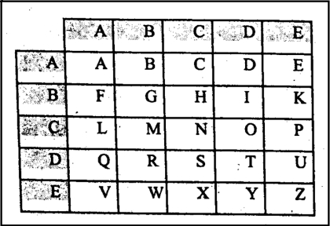
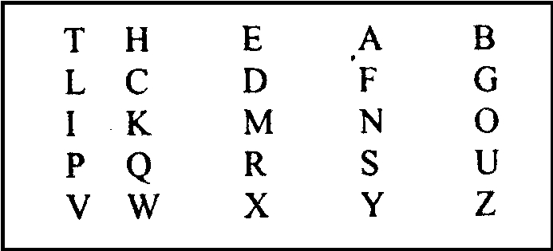

| Развитие шифров | Изобретения | Немного о... | На главную..>>|
Времена становления греческой цивилизации
оказались очень ценной эпохой для криптографии.
Еще одно изобретение древних греков-
так называемый "Квадрат Полибия"
В нём буквы алфавита записывались в квадрат 5 на 5
(при использовании греческого алфавита одна ячейка оставалась пустой),
после чего с помощью оптического телеграфа передавались номер строки и столбца,соответствующие символу исходного текста
(на каждую букву приходилось два сигнала: число факелов обозначало разряд буквы по горизонтали и вертикали)
Так, В заменялась на АВ, R на DB и т.д.

Усложненный вариант заключается в произвольной записи букв в квадрат.
Это произвольный порядок и является ключом.
Но это представляло некоторые неудобства,
так как произвольный порядок записи сложно запомнить и приходилось носит ключ с собой
В качестве компромисного решения был предложен ключ-пароль.
Легко запоминаемый пароль записывался без повторов в квадрат;
в оставшиеся клетки в алфавитном порядке записывались буквы, отсутствующие в пароле.
Например, пусть паролем будет слово THE TABLE
тогда

Такой квадрат не нужно носить с собой. Достаточно знать пароль.